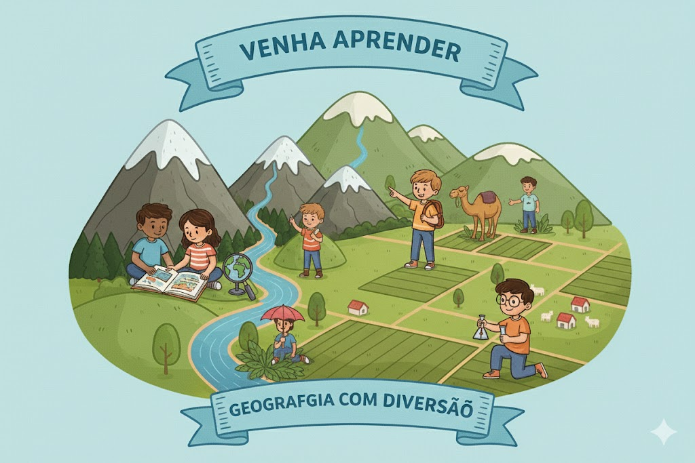
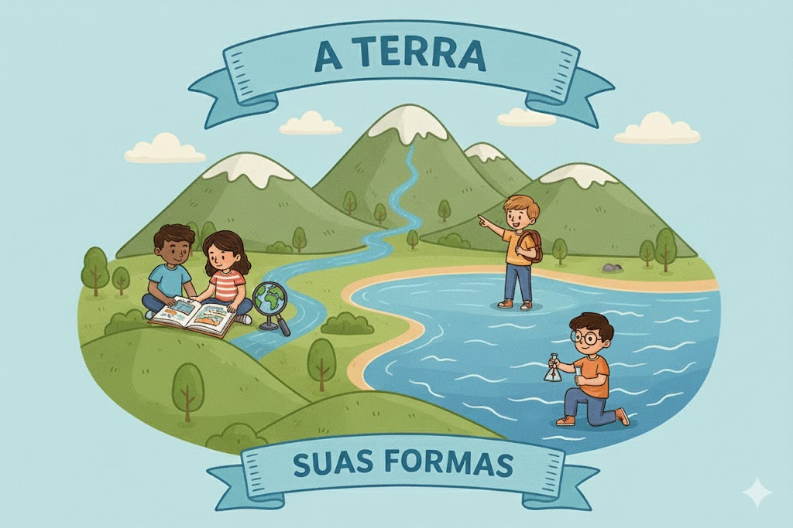
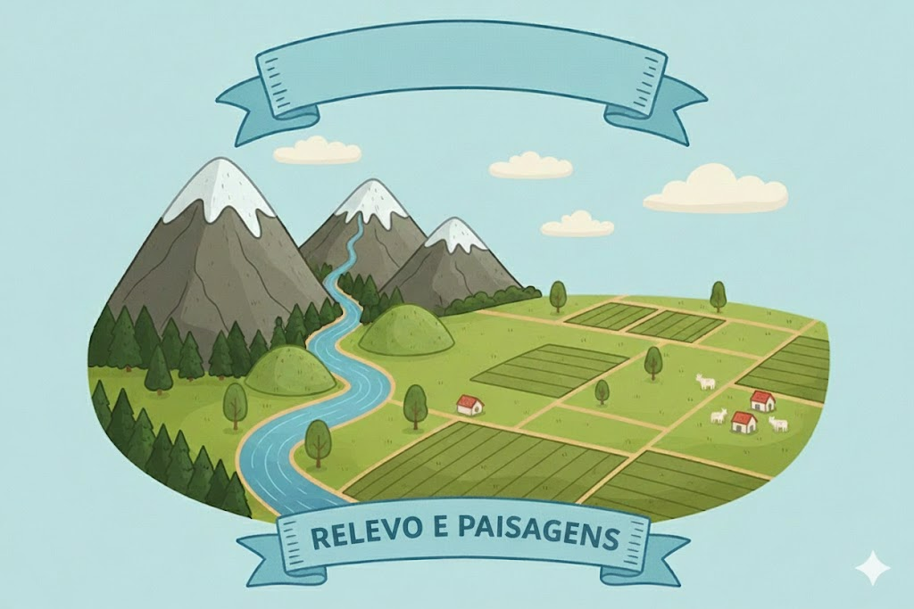
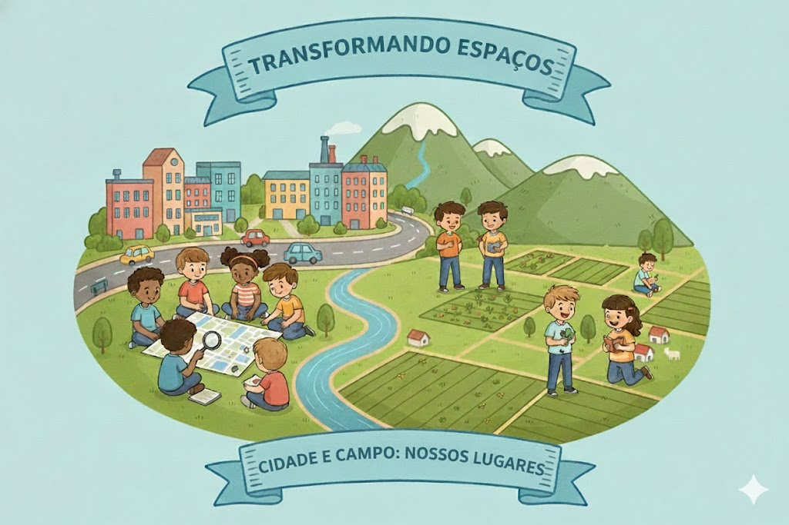
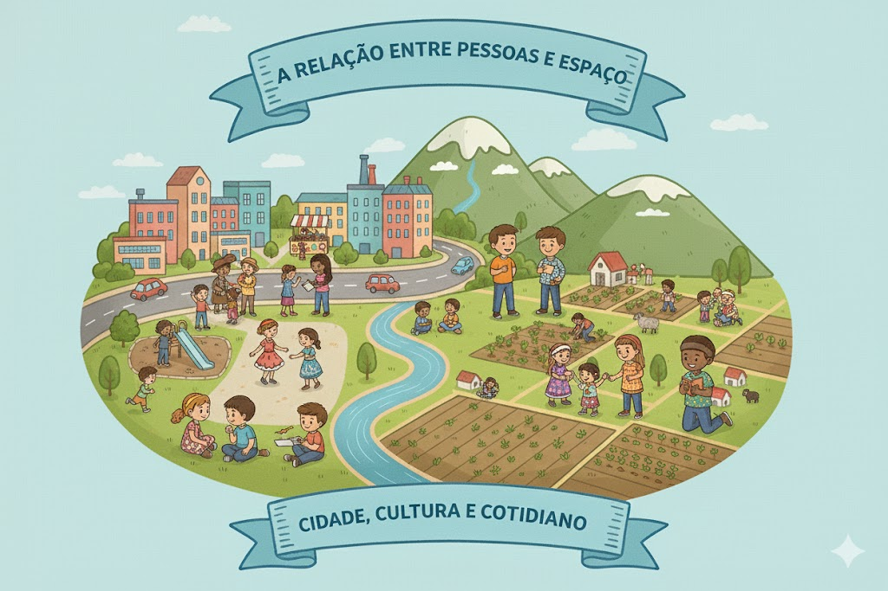
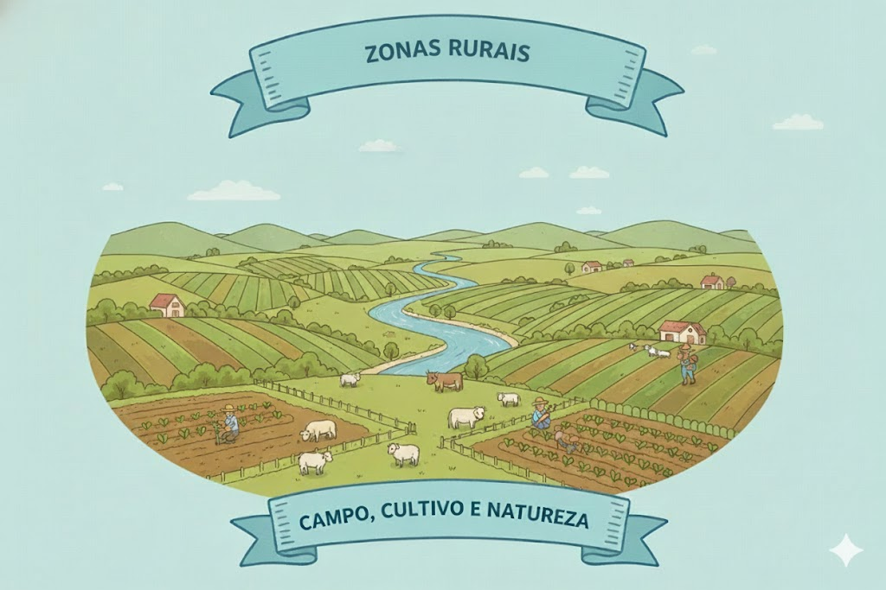
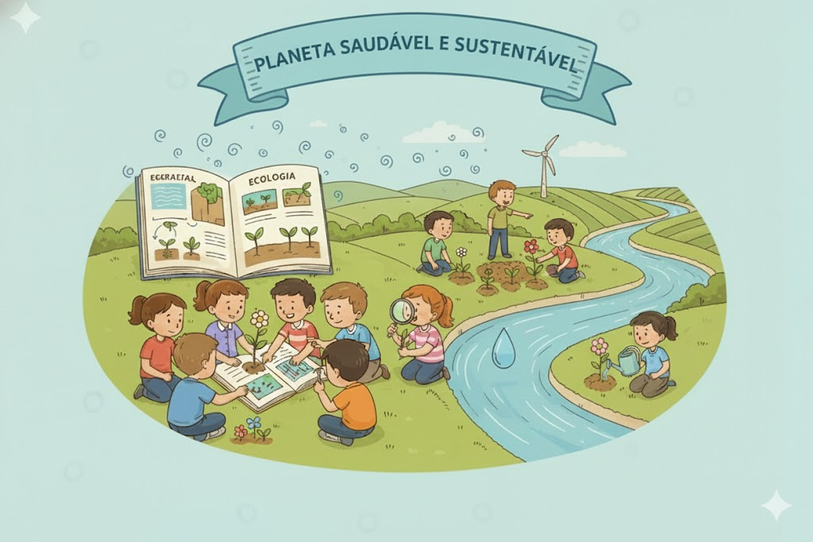
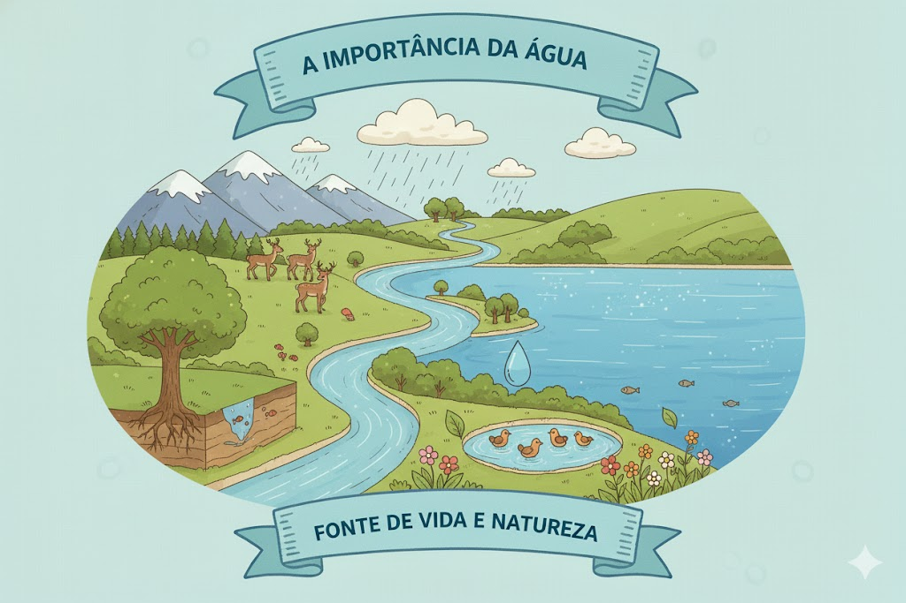
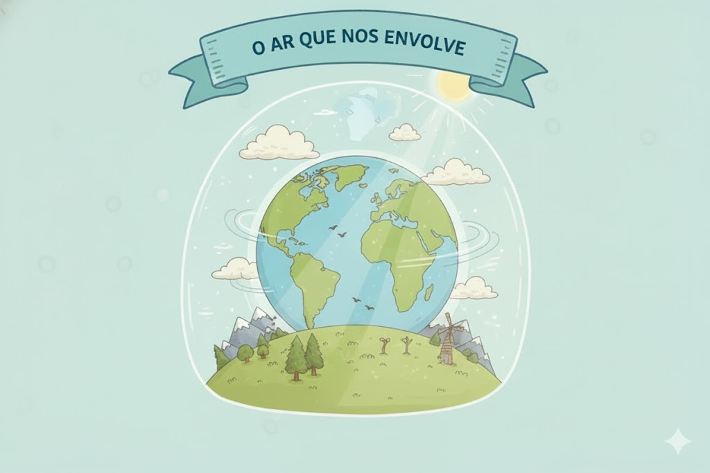
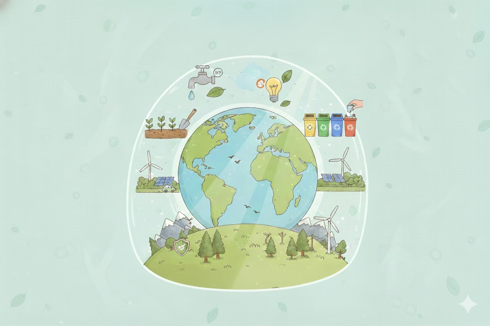

🌎 Geografia: Explorando o Nosso Planeta
Escolha um módulo para entender como o mundo está organizado e como o espaço nos afeta!
Módulo 1: O Planeta Terra e Suas Formas
🎯 Objetivo: Compreender como o planeta Terra é formado, reconhecer as principais formas de relevo e identificar os diferentes tipos de clima, entendendo como essas características influenciam a vida e as paisagens ao nosso redor.
🌍 Olá, bem-vindo!
Prepare-se para embarcar em uma viagem incrível pelo nosso planeta! Aqui, você vai aprender de forma leve, divertida e curiosa sobre como a Terra é formada, descobrir montanhas, planícies, vales e muitas paisagens diferentes, além de entender como os climas do mundo funcionam e influenciam a vida de todos nós.
A Terra e Suas Formas
A Terra é o nosso lar no universo, o único planeta conhecido onde existe vida. Ela é formada por imensos oceanos, grandes continentes, pequenas ilhas e muitas paisagens diferentes que deixam o mundo ainda mais interessante. Quando olhamos um mapa, parece tudo pequeno, mas na realidade nosso planeta é enorme, cheio de cores, climas e lugares que nunca são iguais. Nos oceanos, encontramos águas profundas e cheias de mistérios; nos continentes, existem florestas gigantes, desertos quentes, montanhas altíssimas e cidades onde milhões de pessoas vivem juntas. Já as ilhas são pedaços de terra cercados completamente pela água, algumas bem grandes, como o Japão, e outras tão pequenas que quase cabem em um mapa. Cada pedacinho da Terra tem algo especial. E é essa mistura de formas, cores e lugares que torna nosso planeta tão único e tão bonito. Além disso, todos nós, animais, plantas e seres humanos, dependemos da Terra para viver, por isso precisamos cuidar bem dela todos os dias.
A Terra é única:
Nosso planeta é o único conhecido com vida, por isso precisamos cuidar bem dele todos os dias.
Relevo e Paisagens
O relevo é formado pelas diferentes “formas” da superfície da Terra, e cada uma delas deixa a paisagem com um jeito próprio. As montanhas são áreas bem altas, com subidas íngremes e temperaturas mais frias no topo. Elas podem dificultar a construção de cidades, mas são importantes porque abrigam muitos animais e plantas e dão origem a vários rios. As planícies, ao contrário, são áreas baixas e bem planas. Por serem mais fáceis de ocupar, muitas cidades, fazendas e plantações são construídas nelas. Além disso, existem vales, que ficam entre montanhas e geralmente têm rios, e colinas, que são elevações mais suaves. Cada tipo de relevo influencia o clima, a vegetação e até o modo como as pessoas vivem naquele lugar.
Importância do Relevo:
As formas de relevo influenciam o clima, a vegetação e até o modo como as pessoas vivem em cada lugar.
Climas do Mundo
O clima é o conjunto das condições do tempo em uma região, e ele pode mudar bastante de um lugar para outro. Existem climas quentes, frios, úmidos e secos, e cada um deles influencia a vida das pessoas de um jeito diferente. Nos lugares quentes, as temperaturas são altas e os dias costumam ser ensolarados. Já nas regiões frias, o clima é gelado e, em alguns casos, até neva. O clima úmido é aquele com bastante chuva e ar mais carregado de vapor d’água, enquanto o clima seco tem poucas chuvas e o ar fica mais quente e seco. Essas diferenças fazem com que as pessoas escolham roupas diferentes, plantam alimentos específicos e convivam com animais que se adaptam ao clima da região. Assim, o clima ajuda a definir como é cada lugar do mundo.

Clima e Cotidiano:
O clima de cada lugar influencia, no que usamos, o que plantamos e como vivemos.
🎥 Assista: O Relevo:
Próximo Módulo (1 de 3) →Módulo 2: Sociedade e Espaço
🎯 Objetivo: Compreender como as pessoas transformam os lugares onde vivem e identificar as diferenças entre zonas urbanas e rurais.
Bem-vindo!
Aqui você vai descobrir, de forma simples e divertida, como as pessoas transformam os espaços onde vivem e como cada lugar, seja na cidade ou no campo, tem seu próprio ritmo e jeito de funcionar. Vamos explorar juntos as características das zonas urbanas e rurais, entendendo como elas influenciam nosso dia a dia, nossos costumes e nosso modo de viver.
A Relação Entre Pessoas e Espaço
As pessoas transformam o espaço ao seu redor para poder viver melhor. Com o tempo, elas constroem casas, ruas, escolas, praças, comércios e até cidades inteiras. Cada cidade tem seu próprio ritmo: algumas são grandes e cheias de movimento, outras são pequenas e mais tranquilas. Além disso, cada lugar tem seus costumes, tradições e maneiras de viver, que são influenciados pela história, pelo clima e pelas necessidades das pessoas. É essa convivência entre as pessoas e o espaço que faz cada cidade ser única, com sua própria identidade e jeito especial.
Ação Humana no Espaço:
Casas, ruas e cidades surgem porque as pessoas transformam o espaço para viver melhor.
Zonas Urbanas
As zonas urbanas são áreas onde a presença de prédios, ruas movimentadas, carros e comércios é muito intensa. Nessas regiões, vivem muitas pessoas, e por isso é comum encontrar serviços como escolas, hospitais, shoppings, ônibus e metrôs. As cidades costumam ter um ritmo mais acelerado.
Características das Zonas Urbanas:
As cidades possuem muitos prédios, serviços e grande circulação de pessoas, tornando o ambiente mais movimentado e dinâmico.
Zonas Rurais
As zonas rurais, também chamadas de campo, são áreas onde a natureza está muito presente. Lá encontramos plantações, rios, animais, pastos e grandes áreas verdes. É um ambiente mais calmo e silencioso. No campo, muitas pessoas trabalham com agricultura e criação de animais, produzindo alimentos importantes para todos.
Características das Zonas Rurais:
As áreas rurais possuem mais natureza, com plantações, animais e grandes espaços verdes, oferecendo um ambiente calmo e pouco movimentado.
🎬 Aula em Vídeo: Zona Rural e Zona Urbana
Próximo Módulo (2 de 3) →Módulo 3: Água, Ar e Meio Ambiente
🎯 Objetivo: Compreender a importância da água, do ar e das ações de preservação, reconhecendo como esses recursos sustentam a vida no planeta e por que devemos cuidar deles para garantir um futuro equilibrado e saudável.
🌎💧 Bem-vindo!
Aqui você vai descobrir, de um jeito simples e interessante, como a água, o ar e o cuidado com o planeta são essenciais para a vida. Prepare-se para aprender sobre a natureza, entender sua importância e perceber como pequenas atitudes podem ajudar a proteger o nosso mundo.
A importância da água
A água é um dos recursos mais importantes do planeta. Ela está presente nos rios, mares, lagos e geleiras. Mesmo quando não vemos, ela faz parte de muitos processos da natureza. Toda forma de vida depende da água: plantas precisam dela para crescer, animais para beber e nós, seres humanos, para viver, cozinhar, limpar e produzir alimentos. Por isso, é essencial usarmos esse recurso com cuidado, evitando desperdícios, protegendo rios e não jogando lixo na natureza.
Importância da Água:
A água está presente em rios, mares, lagos e até no subsolo, sendo fundamental para plantas, animais e seres humanos.
O ar que nos envolve
A atmosfera é como um grande cobertor invisível que envolve a Terra. Ela é formada por diferentes gases, como nitrogênio, oxigênio e um pouquinho de gás carbônico — que juntos tornam possível a vida do jeito que conhecemos. É graças a essa camada de ar que conseguimos respirar e nos proteger de partes perigosas da luz do Sol. Ela também ajuda a controlar o clima, permitindo fenômenos como chuva, vento e formação de nuvens. Em resumo, a atmosfera é essencial, silenciosa, invisível e sempre presente, trabalhando sem parar para manter nosso planeta acolhedor e habitável.
Importância da Atmosfera:
A atmosfera envolve a Terra como um cobertor invisível, permitindo a respiração, protegendo contra a radiação do Sol e ajudando a manter a temperatura do planeta estável. Ela também controla fenômenos como chuva, vento e nuvens, tornando a vida possível e mantendo o planeta habitável..
Sustentabilidade e preservação
Cuidar do planeta é essencial para construirmos um futuro mais saudável. A sustentabilidade começa com atitudes simples do dia a dia, como economizar água, separar o lixo para reciclagem e evitar o desperdício. Proteger as florestas e combater o desmatamento também é fundamental, já que elas purificam o ar e abrigam diversas formas de vida. Cada ação, por menor que pareça, contribui para um mundo mais equilibrado e sustentável.
Sustentabilidade e Preservação:
Cuidar do planeta envolve atitudes simples, como economizar água, reciclar e evitar desperdícios. Proteger as florestas e os recursos naturais ajuda a manter o ar limpo..
🎬 Aula em Vídeo: Educação Ambiental
🎉 PARABÉNS! MÓDULO FINALIZADO! 🎉
Você completou a Aventura da Geografia! Que conquista incrível!
Ver Mais Cursos e Aventuras →